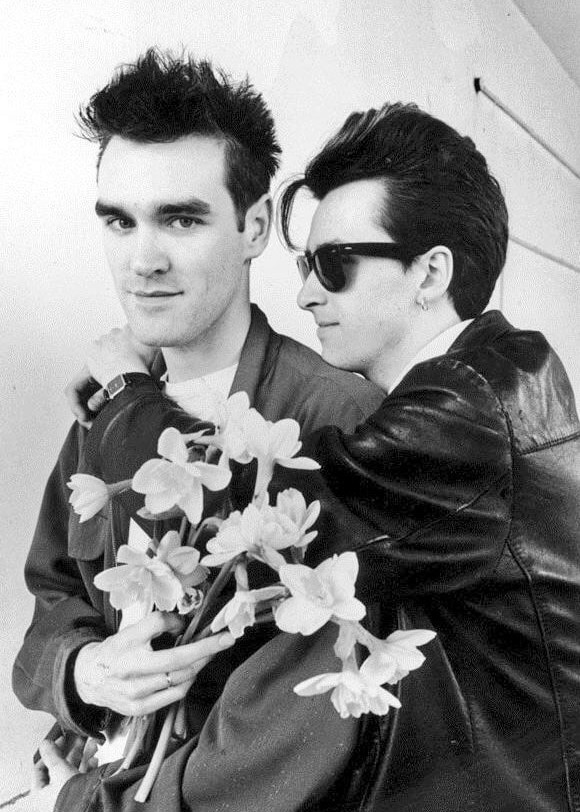

Unfortunately, I lacked the time to let you copy this as a jpeg, but you know how to take a screenshot and trim it, right?
A Smiths/Morrissey Valentine Generator

Unfortunately, I lacked the time to let you copy this as a jpeg, but you know how to take a screenshot and trim it, right?